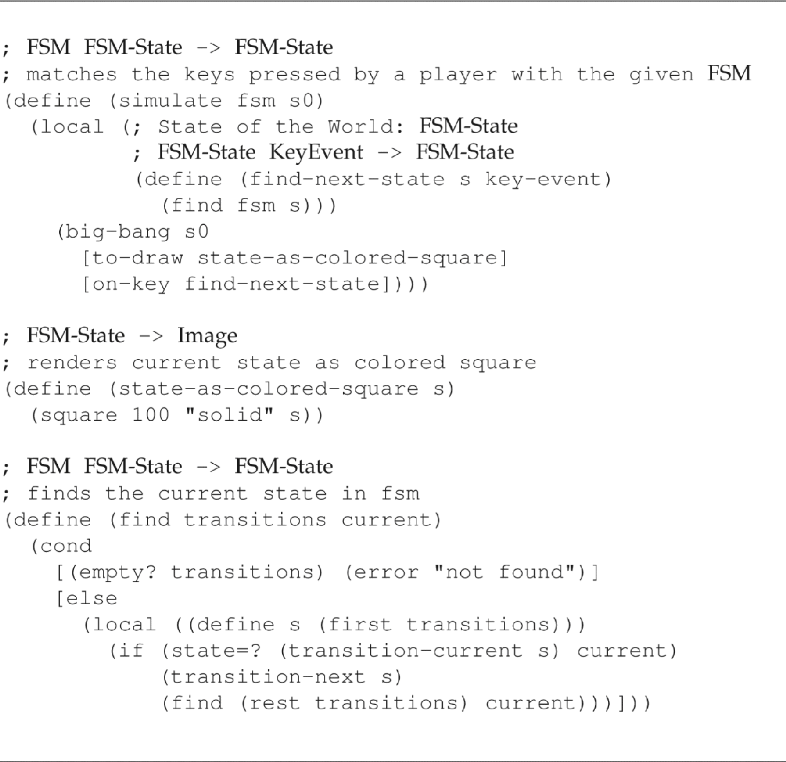

16.3 Local Definitions Add Expressive Power
The third and last example illustrates how local adds expressive power to BSL and BSL+. Chapter 12.8 presents the design of a world program that simulates how a finite state machine recognizes sequences of keystrokes. While the data analysis leads in a natural manner to the data definitions in figure 82, an attempt to design the main function of the world program fails. Specifically, even though the given finite state machine remains the same over the course of the simulation, the state of the world must include it so that the program can transition from one state to the next when the player presses a key.
Figure 102 shows an ISL solution to the problem. It uses local function definitions and can thus equate the state of the world with the current state of the finite state machine. Specifically, simulate locally defines the key-event handler, which consumes only the current state of the world and the KeyEvent that represents the player’s keystroke. Because this locally defined function can refer to the given finite state machine fsm, it is possible to find the next state in the transition table—even though the transition table is not an argument to this function.

Figure 102: Power from local function definitions
As the figure also shows, all other functions are defined in parallel to the main function. This includes the function find, which performs the actual search in the transition table. The key improvement over BSL is that a locally defined function can reference both parameters to the function and globally defined auxiliary functions.
In short, this program organization signals to a future reader exactly the insights that the data analysis stage of the design recipe for world programs finds. First, the given representation of the finite state machine remains unchanged. Second, what changes over the course of the simulation is the current state of the finite machine.
The lesson is that the chosen programming language affects a programmer’s ability to express solutions, as well as a future reader’s ability to recognize the design insight of the original creator.
Exercise 262. Design the function identityM, which creates diagonal squares of 0s and 1s:
Linear algebra calls these squares identity matrices.
> (identityM 1)
(list (list 1))
> (identityM 3)
(list (list 1 0 0) (list 0 1 0) (list 0 0 1))
Use the structural design recipe and exploit the power of local.